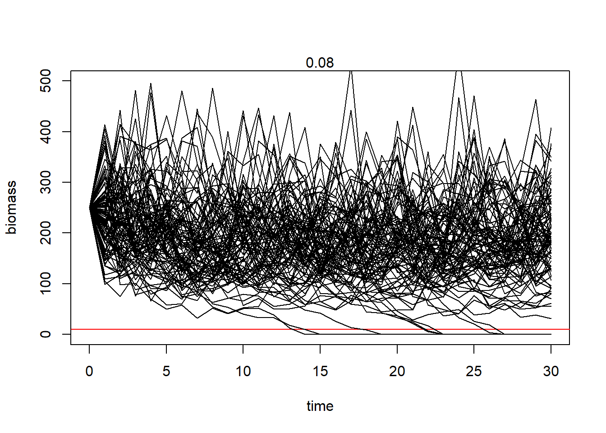
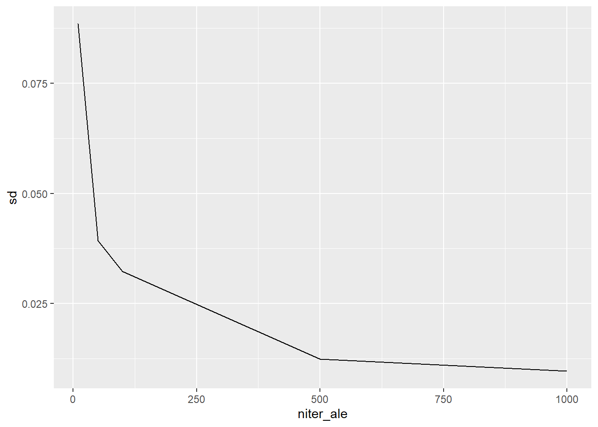
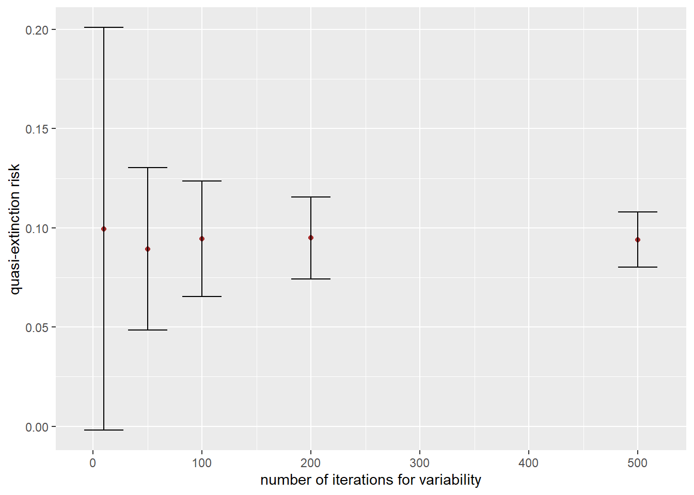
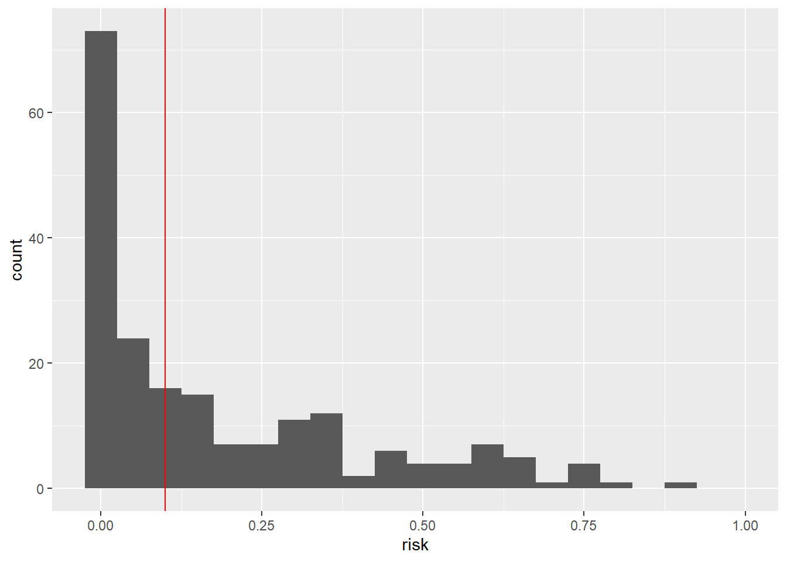
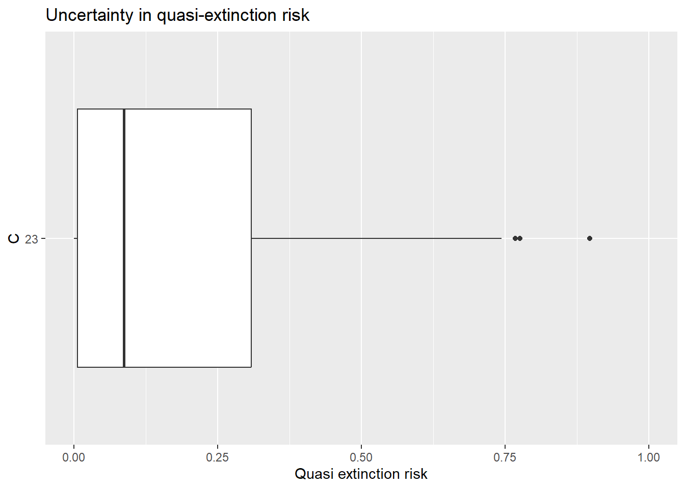
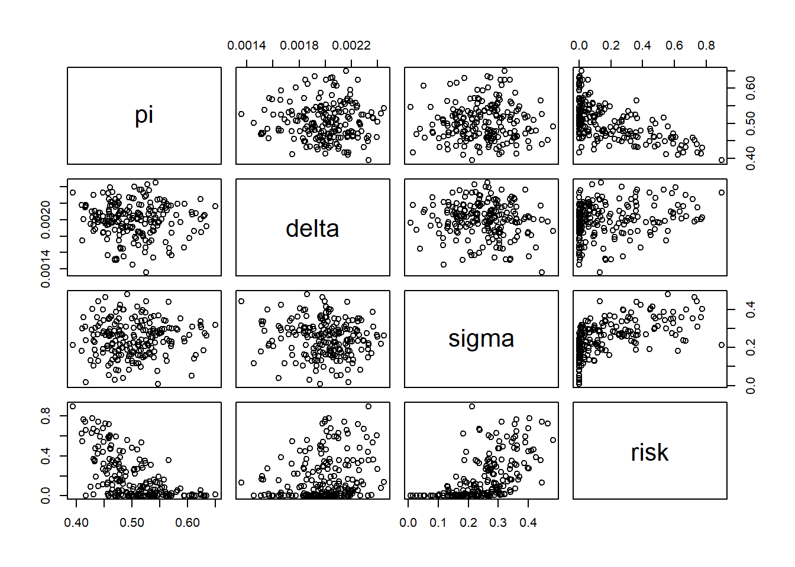
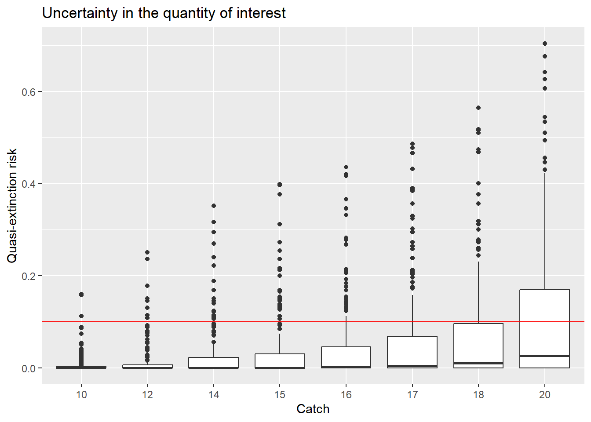

Population Viability Analysis
MVEN10
Model specification
\[B_t = B_{t-1} e^{(\pi -\delta B_{t-1}+S_t)} - C_t\]
\[S_t \sim N(0,\sigma)\]
- Identify state variables, assessment variables and model parameters.
PVA with fixed parameter values
Evaluate robustness in the PVA
- Find the number of iterations where the estimate of the quasi-extinction risk has a reasonable standard deviation.
Robustness check
- Make a plot showing the standard deviation for different number of iterations

- Make a plot showing the estimated quasi-extinction risk with error bars for different number of iterations. Add “quasi-extinction risk” as y-label. Add “number of iterations for variability” as x-label.

Consider uncertainty in parameters
So far we used point estimates of the parameters. Now we will include uncertainty in parameters. Since we have both uncertainty and variability, this will be a 2D Monte Carlo simulation.
Here I have copied and pasted in the function for the assessment, I use the selected number of iterations for variability from above (niter_ale) and have given it a different name (calc_risk_2D). The input argument is now iter_epi.
- Add uncertainty in the parameters into the Monte Carlo simulation of the PVA. Replace parameter values by the iter_epi’th draw in df_par.
- Run the PVA simulation for all niter_epi draws from parameter uncertainty and save to an object
[1] 0.006 0.058 0.000 0.014 0.068 0.280 0.222 0.000 0.450 0.084 0.002 0.000
[13] 0.060 0.088 0.000 0.898 0.024 0.196 0.000 0.276 0.000 0.446 0.768 0.006
[25] 0.592 0.594 0.126 0.108 0.092 0.646 0.032 0.000 0.622 0.200 0.270 0.744
[37] 0.018 0.476 0.008 0.000 0.254 0.268 0.000 0.368 0.012 0.190 0.122 0.132
[49] 0.470 0.114 0.540 0.036 0.038 0.058 0.026 0.000 0.116 0.632 0.000 0.422
[61] 0.146 0.014 0.302 0.006 0.290 0.016 0.532 0.058 0.358 0.044 0.270 0.002
[73] 0.000 0.144 0.002 0.310 0.328 0.016 0.464 0.072 0.020 0.000 0.442 0.000
[85] 0.000 0.136 0.322 0.000 0.726 0.250 0.046 0.000 0.000 0.022 0.358 0.006
[97] 0.254 0.008 0.002 0.222 0.014 0.360 0.032 0.008 0.368 0.098 0.096 0.064
[109] 0.606 0.300 0.000 0.026 0.558 0.008 0.742 0.658 0.236 0.000 0.144 0.000
[121] 0.004 0.000 0.308 0.716 0.388 0.056 0.000 0.328 0.006 0.034 0.130 0.168
[133] 0.104 0.000 0.576 0.496 0.364 0.000 0.002 0.158 0.548 0.016 0.000 0.354
[145] 0.000 0.166 0.086 0.040 0.134 0.000 0.002 0.004 0.474 0.338 0.594 0.000
[157] 0.674 0.776 0.000 0.214 0.080 0.324 0.002 0.000 0.024 0.070 0.282 0.032
[169] 0.000 0.064 0.164 0.022 0.018 0.068 0.010 0.008 0.480 0.000 0.118 0.092
[181] 0.192 0.586 0.114 0.358 0.276 0.098 0.000 0.506 0.162 0.020 0.160 0.050
[193] 0.000 0.000 0.346 0.670 0.036 0.000 0.000 0.154- Visualise uncertainty in the risk estimate using a histogram

- Visualise uncertainty in the risk estimate using a boxplot. Add “Uncertainty in quasi-extinction risk” as a title. Add “Quasi extinction risk” as y-label. Make y axis go from 0 to 1. Flip axis.

- Summarise uncertainty in the quasi-extinction risk by a 90% probability interval and a mean value.
- Add the results into the following text.
The quasi-extinction risk for a catch of 23 is assessed to be 0.18311 with an 90% uncertainty interval (0 , 0.6466).
Sensitivity analysis
One way to identify which parameters that has the strongest contribution to uncertainty in the output is to perform a sensitivity analysis. I recommend to perform sensitivity analysis by visualisatio and a quantitative measure.
- Visualise the influence of parameter on calculated risk using scatter plots

- Calculate the spearman rang correlation
pi delta sigma risk
pi 1.00000000 -0.01731793 0.02431411 -0.5710597
delta -0.01731793 1.00000000 -0.11058876 0.2064209
sigma 0.02431411 -0.11058876 1.00000000 0.6966861
risk -0.57105971 0.20642087 0.69668606 1.0000000Why is the influence from growth negative?
Which parameter has the strongest influence on the calculated risk?
Which parameter that has the strongest influence depends on the role it has in a model and how much uncertainty it has compared to the other parameters.
Decision analysis
Decision makers wants to find the fishing pressure for which the experts are at least 80% certain that the quasi-extinction risk is below 10.
We search for the highest fishing pressure where this applies, but testing different values on C and summarising uncertainty by its 80% quantile.
Visualise the simulated values.

Summarise uncertainty for different catch values
# A tibble: 8 × 4
C av_risk sd_risk q80
<chr> <dbl> <dbl> <dbl>
1 10 0.00708 0.0219 0.004
2 12 0.0144 0.0370 0.014
3 14 0.0264 0.0582 0.0304
4 15 0.0360 0.0735 0.044
5 16 0.0466 0.0871 0.0728
6 17 0.0602 0.105 0.096
7 18 0.0735 0.121 0.126
8 20 0.111 0.161 0.202